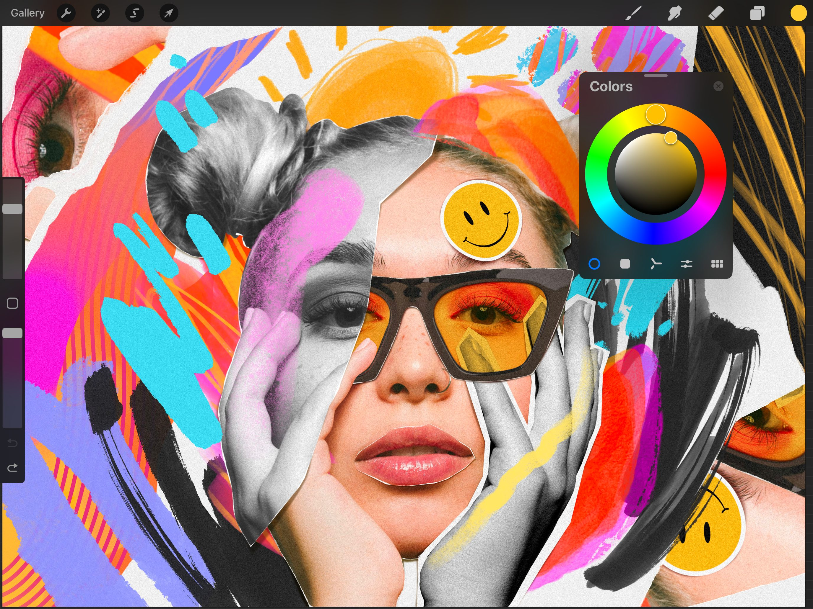
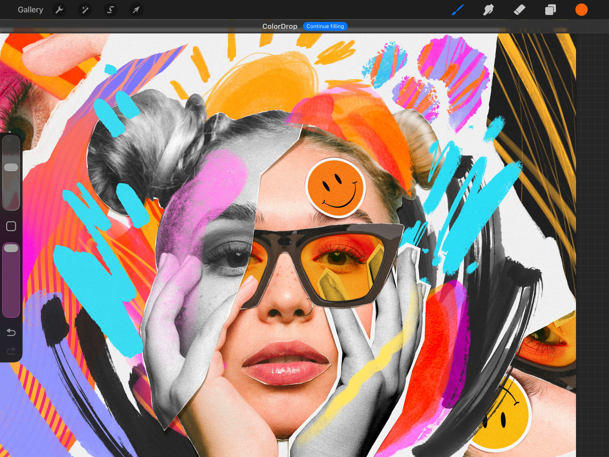
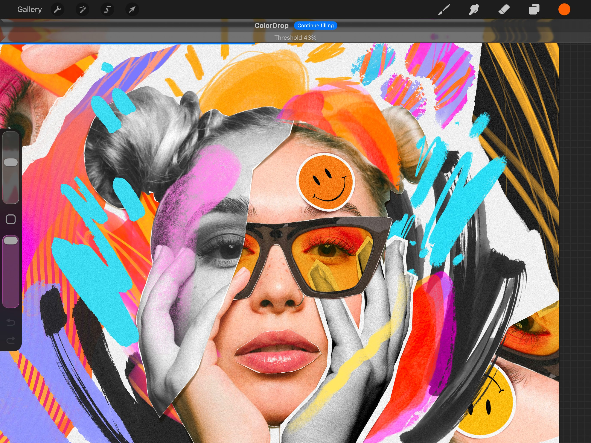
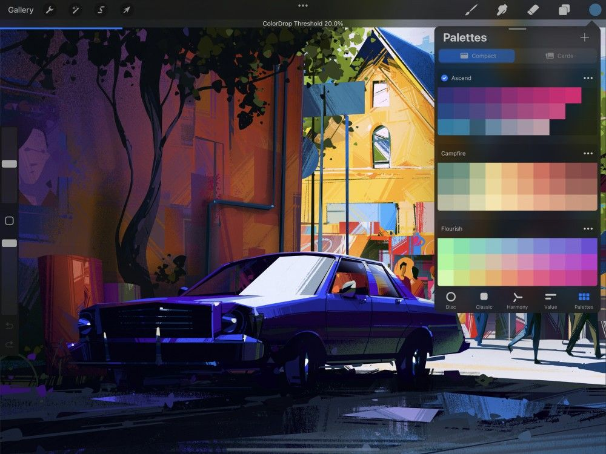
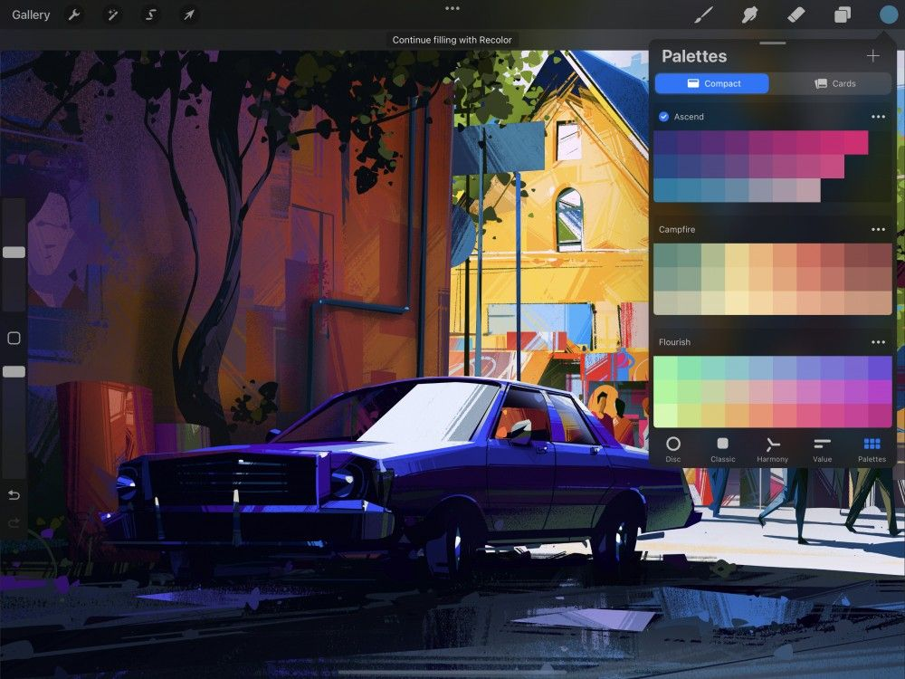
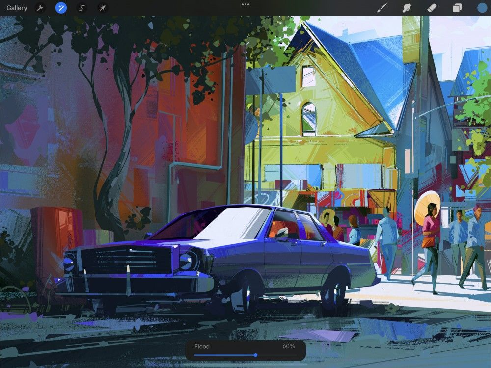
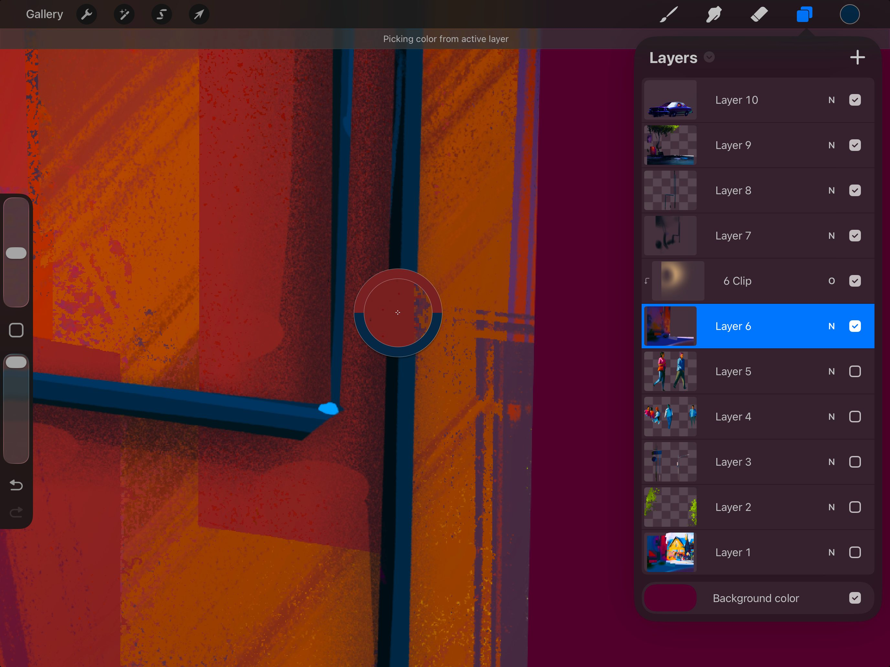
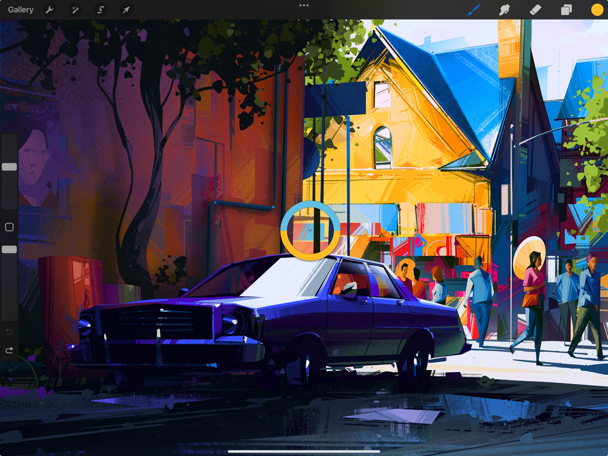
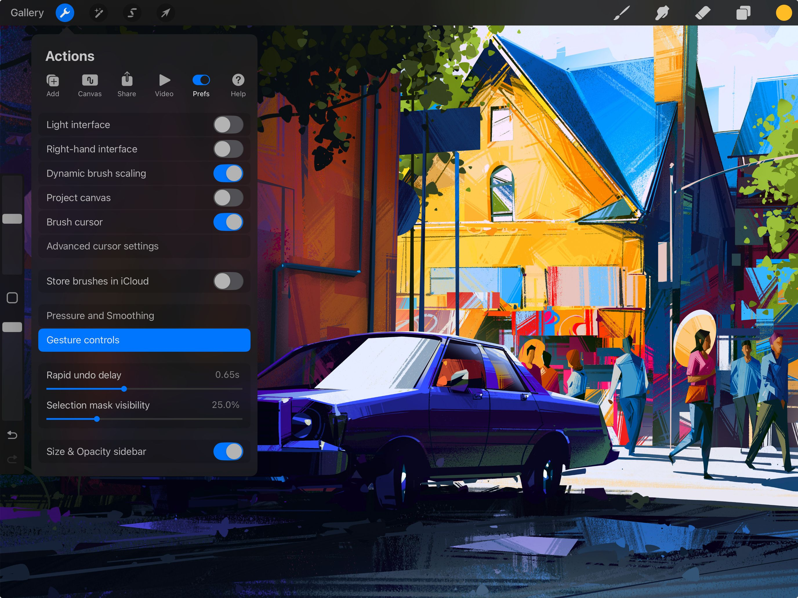

📖 Đã dịch sang tiếng Việt. Thuật ngữ chuyên môn giữ tiếng Anh — rê chuột để xem nghĩa (tooltip).
Interface
Procreate offers multiple colors interfaces tailored to suit the way you work. This gives you a variety of ways to choose, save, and adjust colors.
Bảng Color (màu)
Bảng Color là nơi bạn chọn, chỉnh sửa và lưu màu.
Active Color (màu đang dùng)
Hiển thị màu hiện đang được chọn.
Màu chính
Ở góc trên cùng bên phải của Color Panel, cặp hình chữ nhật đặt cạnh nhau hiển thị màu chính (trái) và màu phụ (phải) của bạn.
Màu phụ
Tìm hiểu thêm về cách dùng màu phụ trong Color Dynamics.
Bánh xe màu chứa một reticle: một vòng tròn trong suốt mà bạn có thể kéo để chọn màu. Khi bạn kéo reticle phụ nhỏ hơn, nó hiển thị hai màu trong một vòng tròn chia đôi. Ở bên phải bạn sẽ thấy màu mà reticle đang chỉ vào. Ở bên trái, bạn sẽ thấy màu gần nhất trong History (lịch sử). Điều này cho phép bạn so sánh màu mới chọn với tông vừa dùng.
Phần History hiển thị mười màu gần nhất mà bạn đã dùng.
Khi bạn mới mở một tác phẩm, phần History trống. Các màu được thêm vào khi bạn chọn, với tối đa mười màu trong History. Mỗi màu mới được chọn sau điểm đó sẽ đẩy màu cũ nhất ra khỏi lưới.
You'll find History in the Color Panel on the Disc, Classic, Harmony, and Value tabs.
Pro Tip
You can also find your Color History when working with the Color Companion, at the top of your Palettes, in either Compact or Cards view.
Chạm Clear (xoá) để làm sạch lịch sử.
Active Palette (bảng màu đang dùng)
Palette đang dùng hiển thị ở dưới cùng của Color Panel.
Bạn có thể tìm palette đang dùng ở dưới cùng Color Panel ở các tab Disc, Classic, Harmony và Value. Nó cũng có ở tab Palettes.
Bạn có thể đổi palette đang dùng ở tab Palettes.
Tìm hiểu thêm về Palettes (bảng màu).
Color Disc / Classic / Harmony / Value / Palettes
Procreate cung cấp nhiều cách để khám phá và chọn màu mới.
Khi mới mở Color Panel, bạn mặc định thấy Color Disc. Khám phá thêm các tùy chọn bên dưới trong các phần tiếp theo của Handbook (sổ tay).
Color Disc cung cấp vòng Hue bên ngoài bao quanh đĩa Saturation có thể phóng to ở bên trong. Điều này cho phép điều khiển chọn màu tinh tế bằng cảm ứng.
Classic mang cách chọn màu truyền thống. Nó cung cấp các thanh trượt Hue / Saturation / Brightness kết hợp với bộ chọn màu hình vuông tiêu chuẩn.
Harmony đưa ra các gợi ý màu dễ chịu dựa trên tông bạn đang chọn.
Value (giá trị) cung cấp các thanh trượt chính xác cùng các giá trị số và thập lục phân. Đây là lựa chọn lý tưởng để khớp màu chính xác.
Palettes cho phép bạn truy cập các bộ swatch (mẫu màu). Procreate bao gồm một số palette tiêu chuẩn. Bạn cũng có thể nhập palette và tự tạo palette riêng. Palette đang dùng hiển thị ở dưới cùng của mỗi chế độ Color Panel kể trên.
Bạn có thể chuyển sang bất kỳ chế độ nào ở trên bằng các tab ở dưới cùng Color Panel.
Nút bật/tắt Color History
Nút History/Palette
Trên iPad nhỏ hơn, chạm nút dấu ba chấm để mở menu cho phép bạn chuyển giữa hiển thị palette đang dùng hoặc Color History.
Color History (lịch sử màu)
Chạm nút này để đặt vùng hiển thị bao gồm Color History thay vì palette đang dùng. Điều này nhằm giúp mọi iPad (bất kể kích thước màn hình) đều được hưởng tính năng Color History.
Active Palette (bảng màu đang dùng)
Chạm nút này để đưa giao diện về lại chế độ xem mặc định, trong đó palette đang dùng nằm bên dưới phương pháp chọn màu.
Heads Up
If you have Color History active, tapping the ellipsis button for the option to clear your current Color History.
Color Companion (bạn đồng hành màu)
Giờ bạn có thể mang theo Color Panel theo mình.

Khi được gọi, Color Panel sẽ hiện lên ở trên cùng bên phải màn hình. Để định vị lại ở bất kỳ đâu trên khung vẽ, hãy kéo chốt màu xám nhỏ ở đầu Color Panel. Toàn bộ Color Panel sẽ tách ra khỏi thanh menu trên cùng và thu nhỏ thành phiên bản nhỏ gọn hơn. Kéo nó đến bất kỳ vị trí nào bạn muốn trên màn hình.
Đưa nó về vị trí neo ban đầu bằng cách chạm nút X ở trên cùng bên phải của Color Companion.
Pro Tip
Color History is now available when your Color Companion is set to the Palettes tab . It will appear at the top of your Palettes list, so just scroll up by dragging a finger down the list, whether in Compact or Cards view.
Active Color (màu đang dùng)
Ở trên cùng bên phải giao diện Procreate, Active Color hiển thị màu đang chọn. Nhấn và giữ để chuyển đổi giữa màu hiện tại và màu trước đó. Bạn cũng có thể kéo nó lên khung vẽ để gọi ColorDrop. Đây là cách nhanh để đổ màu tràn vào các vùng của tác phẩm.

Active Color hiển thị màu hiện đang chọn. Chạm vào Active Color để mở Color Panel.
Chuyển sang màu trước đó
Nhấn và giữ Active Color để chuyển đổi giữa màu hiện tại và màu trước đó.
ColorDrop (kéo thả màu)
Kéo Active Color vào bất kỳ vùng nào của tác phẩm. Thả ra để đổ màu tràn vùng đó bằng màu đã chọn.


Màu sẽ lan ra ngoài cho đến khi chạm một biên giới — ví dụ: một đường viền, hoặc một vùng màu khác.
Pro Tip
Use ColorDrop in conjunction with Reference Layers . This helps easily keep your inks and colors separated.
ColorDrop Threshold (ngưỡng ColorDrop)
Dùng ColorDrop Threshold để điều khiển mức độ màu đã chọn lan qua các biên giới — những vùng có màu khác biệt rõ rệt.
Để kích hoạt Threshold, hãy kéo Active Color qua vùng bạn muốn tô, nhưng đừng thả ra. Sau một lát, ColorDrop Threshold sẽ kích hoạt. Một thanh màu xanh phía trên tác phẩm thể hiện phần trăm ngưỡng. Tiếp tục giữ và kéo ngón tay sang trái để giảm phần trăm, sang phải để tăng.
Ở phần trăm thấp hơn, Procreate sẽ chính xác hơn khi tô — ít có khả năng lan sang các vùng khác ngay cả khi màu tương tự. Ở phần trăm cao hơn, màu sẽ lan ra mạnh hơn nhiều và sẽ tràn qua cả các vùng màu khác biệt rõ rệt.

ColorDrop sẽ ghi nhớ thiết lập Threshold bạn đã chọn cho đến khi thay đổi. Nếu bạn đặt 100%, nó sẽ lưu ở 97,6% để tránh tràn màu.
Continue Filling (tiếp tục tô)
Dùng Continue filling để tô các vùng khác trên khung vẽ bằng Active Color.
Sau khi kéo Active Color lần đầu để ColorDrop, hãy chạm Continue filling ở thanh trên cùng rồi chạm khung vẽ để tô các vùng khác bằng cùng Active Color đó.
Chạm bất kỳ biểu tượng nào trong thanh menu để tắt Continue filling.
ColorDrop với Hover
Hover qua Active Color và chạm hai lần Apple Pencil để kích hoạt ColorDrop.
Một chấm màu sẽ tách ra khỏi Active Color và hover trên khung vẽ, giúp bạn xác định vị trí chính xác cho ColorDrop. Chạm khung vẽ để ColorDrop. Tiếp tục chạm khung vẽ để ColorDrop thêm các vùng khác với cùng Active Color.
Chạm hai lần Apple Pencil một lần nữa, hoặc chạm bất kỳ biểu tượng nào trong thanh menu, để tắt ColorDrop và quay lại vẽ bình thường.
Heads Up
ColorDrop with hover requires iPadOS 16.1 or newer running on iPad Pro 12.9-in. (6th generation) or iPad Pro 11-in. (4th generation) while using Apple Pencil 2nd generation.
SwatchDrop (kéo thả mẫu màu)
Chạm, giữ và kéo một swatch (mẫu màu) từ Color Palette vào bất kỳ vùng nào trên khung vẽ. Thả ra để đổ màu tràn vùng đó bằng màu của swatch.
Giống như ColorDrop, bất kỳ màu nào bạn SwatchDrop sẽ lan ra ngoài cho đến khi chạm một biên giới như đường viền, hoặc một vùng màu khác.
SwatchDrop Threshold (ngưỡng SwatchDrop)
Điều khiển mức độ màu tô của SwatchDrop lan vào và qua các cạnh của tác phẩm bằng SwatchDrop Threshold.

Để kích hoạt Threshold, hãy Touch và Hold (chạm và giữ), rồi kéo một màu Swatch qua vùng bạn muốn tô. Khi kéo màu lên khung vẽ, tiếp tục giữ cho đến khi một đường màu xanh xuất hiện ở trên cùng màn hình. Vuốt ngón tay sang trái hoặc phải để điều chỉnh Threshold tô. Vuốt ngón tay sang trái để giảm Threshold tô trong một vùng. Vuốt sang phải để tăng vùng Threshold tô. Khi đã sẵn sàng chốt mức tô, hãy nhấc ngón tay khỏi khung vẽ.
SwatchDrop ghi nhớ thiết lập Threshold cuối cùng đã dùng cho đến khi bạn đổi lại. Nếu Threshold đặt 100%, nó sẽ lưu ở 97,6% để tránh tràn màu.
Recolor
Đổi màu trên một lớp bằng cách kích hoạt Recolor (tô lại màu) trong QuickMenu và xem kết quả với bản xem trước trực tiếp.

Để vào chế độ Recolor, hãy gán nó làm một nút QuickMenu, sau đó chọn Recolor từ QuickMenu. Để biết cách kích hoạt và gán nút, xem phần QuickMenu của sổ tay này trong Interfaces and Gestures.
Một dấu chân chim nhỏ sẽ xuất hiện ở giữa màn hình. Kéo dấu chân chim đến vùng màu bạn muốn thay thế trên lớp đang dùng.
Chạm vào Active Color để chọn màu thay thế.

Giờ hãy trượt thanh Flood (tràn) ở dưới cùng màn hình. Màu bạn đã chọn sẽ dần được tô bằng màu thay thế. Càng kéo thanh Flood sang phải, màu mới càng lan vào nhiều tông tương tự khác.
Nếu muốn thay thế một vùng khác bằng màu mới, hãy kéo dấu chân chim di chuyển để xem hiệu ứng của việc đổ tràn ở những nơi khác trên lớp.
Chạm bất kỳ đâu trên khung vẽ để chốt và bắt đầu một lần Recolor khác.
Chạm Active Color bất cứ lúc nào để đổi sang một màu thay thế khác.
Eyedropper (ống hút màu)
Lấy mẫu một màu mới ngay lập tức từ bất kỳ đâu trên khung vẽ.
Lấy mẫu màu bằng Touch-and-Hold
Chạm và giữ bất kỳ đâu trên khung vẽ để gọi Eyedropper.
Khi Eyedropper xuất hiện, hãy kéo nó đến bất kỳ vị trí nào trên khung vẽ và thả ra để chọn màu.
Màu mới hiển thị ở nửa trên của kính lúp và màu hiện tại ở nửa dưới. Nhấc ngón tay để chọn màu mới.
Lấy mẫu từ lớp đang dùng
Khi Eyedropper đang được gọi, hãy chạm thêm một ngón tay khác lên khung vẽ để chuyển đổi giữa lấy mẫu màu từ lớp đang dùng và lấy mẫu màu từ hình ảnh tổng hợp.
Pro Tip
Procreate will remember your last choice when sampling, but will reset to sampling the composite when you exit to the Gallery and return to a canvas.

Điều này rất hữu ích để lấy chính xác màu từ lớp hiện tại, trước khi chúng bị ảnh hưởng bởi bất kỳ thay đổi hòa trộn nào.
Tính năng này hoạt động trên các lớp, layer mask (lớp mặt nạ), lớp 3D và lớp vật liệu.
Lấy mẫu màu bằng cách giữ nút Modify
Giữ nút Modify (sửa đổi) trên thanh bên. Bằng tay kia, chạm bất kỳ đâu trên khung vẽ để gọi Eyedropper.
Giữ ngón tay trên khung vẽ, kéo Eyedropper đến vị trí mong muốn và thả ra để chọn màu.
Màu mới hiển thị ở nửa trên của kính lúp và màu hiện tại ở nửa dưới. Nhấc ngón tay để chọn màu mới.
Lấy mẫu màu bằng cách chạm nút Modify
Phương pháp này là biến thể dùng một tay của cách trên.
Chạm nút Modify để gọi một Eyedropper nổi. Nó sẽ nổi cho đến khi bạn chạm và kéo nó đến màu mong muốn.

Eyedropper Settings (cài đặt ống hút)
Thiết lập phím tắt Touch và Pencil để tích hợp Eyedropper vào quy trình làm việc của bạn.
Để kiểm soát Eyedropper tinh tế hơn, hãy vào Actions → Prefs → Gesture Controls → Eyedropper.

Still have questions?
If you didn't find what you're looking for, explore our video resources on YouTube or contact us directly. We’re always happy to help.